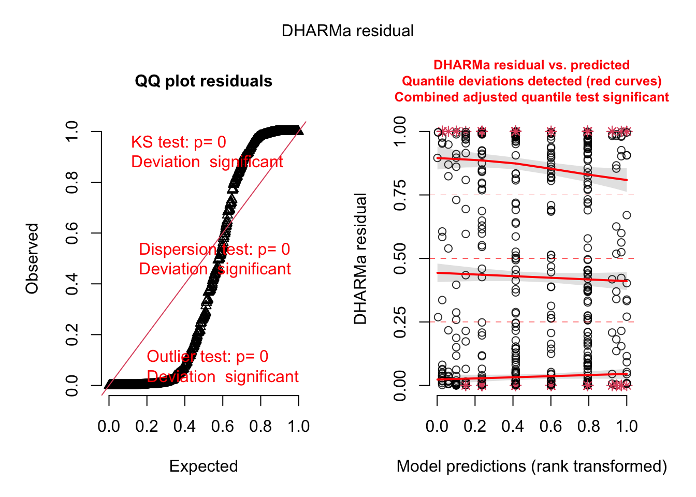

Quadratic effects y~a+I(b^2)scale your variables first!!!
Visualize effects via the library(effects) package
Interpretation: take the link/inverse link function in account when interpreting glms (see Chapter 10 for more details)
Check residuals, however:
for lm, you can just plot the model afterwards plot(model)
for glm, you have to use the DHARMa package simulateResiduals(model, plot=TRUE)
Variables can be scaled with the scale(...) function: df$height <- scale(df$height)
Install the effects package via install.packages("effects")
A.1 Linear regression
Normally distributed response:
data(airquality)str(airquality)## 'data.frame': 153 obs. of 6 variables:## $ Ozone : int 41 36 12 18 NA 28 23 19 8 NA ...## $ Solar.R: int 190 118 149 313 NA NA 299 99 19 194 ...## $ Wind : num 7.4 8 12.6 11.5 14.3 14.9 8.6 13.8 20.1 8.6 ...## $ Temp : int 67 72 74 62 56 66 65 59 61 69 ...## $ Month : int 5 5 5 5 5 5 5 5 5 5 ...## $ Day : int 1 2 3 4 5 6 7 8 9 10 ...summary(airquality)## Ozone Solar.R Wind Temp ## Min. : 1.00 Min. : 7.0 Min. : 1.700 Min. :56.00 ## 1st Qu.: 18.00 1st Qu.:115.8 1st Qu.: 7.400 1st Qu.:72.00 ## Median : 31.50 Median :205.0 Median : 9.700 Median :79.00 ## Mean : 42.13 Mean :185.9 Mean : 9.958 Mean :77.88 ## 3rd Qu.: 63.25 3rd Qu.:258.8 3rd Qu.:11.500 3rd Qu.:85.00 ## Max. :168.00 Max. :334.0 Max. :20.700 Max. :97.00 ## NA's :37 NA's :7 ## Month Day ## Min. :5.000 Min. : 1.0 ## 1st Qu.:6.000 1st Qu.: 8.0 ## Median :7.000 Median :16.0 ## Mean :6.993 Mean :15.8 ## 3rd Qu.:8.000 3rd Qu.:23.0 ## Max. :9.000 Max. :31.0 ## pairs(airquality)
plot(Ozone ~ Temp, data = airquality)fit <-lm(Ozone ~ Temp, data = airquality)abline(fit, col ="red")
summary(fit)## ## Call:## lm(formula = Ozone ~ Temp, data = airquality)## ## Residuals:## Min 1Q Median 3Q Max ## -40.729 -17.409 -0.587 11.306 118.271 ## ## Coefficients:## Estimate Std. Error t value Pr(>|t|) ## (Intercept) -146.9955 18.2872 -8.038 9.37e-13 ***## Temp 2.4287 0.2331 10.418 < 2e-16 ***## ---## Signif. codes: 0 '***' 0.001 '**' 0.01 '*' 0.05 '.' 0.1 ' ' 1## ## Residual standard error: 23.71 on 114 degrees of freedom## (37 observations deleted due to missingness)## Multiple R-squared: 0.4877, Adjusted R-squared: 0.4832 ## F-statistic: 108.5 on 1 and 114 DF, p-value: < 2.2e-16
library(effects)## Carregando pacotes exigidos: carData## lattice theme set by effectsTheme()## See ?effectsTheme for details.plot(allEffects(fit))
plot(allEffects(fit, partial.residuals = T))
pairs(airquality)
fit <-lm(Ozone ~ Temp + Wind + Solar.R , data = airquality)summary(fit)## ## Call:## lm(formula = Ozone ~ Temp + Wind + Solar.R, data = airquality)## ## Residuals:## Min 1Q Median 3Q Max ## -40.485 -14.219 -3.551 10.097 95.619 ## ## Coefficients:## Estimate Std. Error t value Pr(>|t|) ## (Intercept) -64.34208 23.05472 -2.791 0.00623 ** ## Temp 1.65209 0.25353 6.516 2.42e-09 ***## Wind -3.33359 0.65441 -5.094 1.52e-06 ***## Solar.R 0.05982 0.02319 2.580 0.01124 * ## ---## Signif. codes: 0 '***' 0.001 '**' 0.01 '*' 0.05 '.' 0.1 ' ' 1## ## Residual standard error: 21.18 on 107 degrees of freedom## (42 observations deleted due to missingness)## Multiple R-squared: 0.6059, Adjusted R-squared: 0.5948 ## F-statistic: 54.83 on 3 and 107 DF, p-value: < 2.2e-16plot(allEffects(fit, partial.residuals = T))
# optional scale to standardize effect sizes # scale command by default divides by standard deviation and # subracts the meanfit <-lm(Ozone ~scale(Temp) +scale(Wind) +scale(Solar.R), data = airquality)summary(fit)## ## Call:## lm(formula = Ozone ~ scale(Temp) + scale(Wind) + scale(Solar.R), ## data = airquality)## ## Residuals:## Min 1Q Median 3Q Max ## -40.485 -14.219 -3.551 10.097 95.619 ## ## Coefficients:## Estimate Std. Error t value Pr(>|t|) ## (Intercept) 42.255 2.011 21.015 < 2e-16 ***## scale(Temp) 15.638 2.400 6.516 2.42e-09 ***## scale(Wind) -11.744 2.305 -5.094 1.52e-06 ***## scale(Solar.R) 5.387 2.088 2.580 0.0112 * ## ---## Signif. codes: 0 '***' 0.001 '**' 0.01 '*' 0.05 '.' 0.1 ' ' 1## ## Residual standard error: 21.18 on 107 degrees of freedom## (42 observations deleted due to missingness)## Multiple R-squared: 0.6059, Adjusted R-squared: 0.5948 ## F-statistic: 54.83 on 3 and 107 DF, p-value: < 2.2e-16# centering is NOT OPTIONAL = you have to centering if using numeric# variables with interactions (important thing is to center)fit <-lm(Ozone ~ Temp * Wind , data = airquality)summary(fit)## ## Call:## lm(formula = Ozone ~ Temp * Wind, data = airquality)## ## Residuals:## Min 1Q Median 3Q Max ## -39.906 -13.048 -2.263 8.726 99.306 ## ## Coefficients:## Estimate Std. Error t value Pr(>|t|) ## (Intercept) -248.51530 48.14038 -5.162 1.07e-06 ***## Temp 4.07575 0.58754 6.937 2.73e-10 ***## Wind 14.33503 4.23874 3.382 0.000992 ***## Temp:Wind -0.22391 0.05399 -4.147 6.57e-05 ***## ---## Signif. codes: 0 '***' 0.001 '**' 0.01 '*' 0.05 '.' 0.1 ' ' 1## ## Residual standard error: 20.44 on 112 degrees of freedom## (37 observations deleted due to missingness)## Multiple R-squared: 0.6261, Adjusted R-squared: 0.6161 ## F-statistic: 62.52 on 3 and 112 DF, p-value: < 2.2e-16plot(allEffects(fit, partial.residuals = T))
# main effects change when changing * to +fit <-lm(Ozone ~scale(Temp) *scale(Wind) , data = airquality)summary(fit)## ## Call:## lm(formula = Ozone ~ scale(Temp) * scale(Wind), data = airquality)## ## Residuals:## Min 1Q Median 3Q Max ## -39.906 -13.048 -2.263 8.726 99.306 ## ## Coefficients:## Estimate Std. Error t value Pr(>|t|) ## (Intercept) 38.008 2.114 17.983 < 2e-16 ***## scale(Temp) 17.474 2.213 7.897 2.13e-12 ***## scale(Wind) -10.935 2.186 -5.003 2.11e-06 ***## scale(Temp):scale(Wind) -7.467 1.800 -4.147 6.57e-05 ***## ---## Signif. codes: 0 '***' 0.001 '**' 0.01 '*' 0.05 '.' 0.1 ' ' 1## ## Residual standard error: 20.44 on 112 degrees of freedom## (37 observations deleted due to missingness)## Multiple R-squared: 0.6261, Adjusted R-squared: 0.6161 ## F-statistic: 62.52 on 3 and 112 DF, p-value: < 2.2e-16# main effects do not change when changing * to +# in this case, can interpret main effects as the average # effect (e.g. of Temp, Wind) in the range of the data # residual checksfit <-lm(Ozone ~scale(Temp) +scale(Wind) , data = airquality)summary(fit)## ## Call:## lm(formula = Ozone ~ scale(Temp) + scale(Wind), data = airquality)## ## Residuals:## Min 1Q Median 3Q Max ## -41.251 -13.695 -2.856 11.390 100.367 ## ## Coefficients:## Estimate Std. Error t value Pr(>|t|) ## (Intercept) 41.859 2.030 20.618 < 2e-16 ***## scale(Temp) 17.418 2.366 7.362 3.15e-11 ***## scale(Wind) -10.764 2.337 -4.607 1.08e-05 ***## ---## Signif. codes: 0 '***' 0.001 '**' 0.01 '*' 0.05 '.' 0.1 ' ' 1## ## Residual standard error: 21.85 on 113 degrees of freedom## (37 observations deleted due to missingness)## Multiple R-squared: 0.5687, Adjusted R-squared: 0.5611 ## F-statistic: 74.5 on 2 and 113 DF, p-value: < 2.2e-16plot(allEffects(fit, partial.residuals = T))## Warning in Analyze.model(focal.predictors, mod, xlevels, default.levels, : the## predictors scale(Temp), scale(Wind) are one-column matrices that were converted## to vectors## Warning in Analyze.model(focal.predictors, mod, xlevels, default.levels, : the## predictors scale(Temp), scale(Wind) are one-column matrices that were converted## to vectors
par(mfrow =c(2,2))plot(fit)
# doesn't really look optimal, maybe a bit of nonlinearity# and residuals don't look normalfit <-lm(sqrt(Ozone) ~scale(Temp) *scale(Wind) , data = airquality)summary(fit)## ## Call:## lm(formula = sqrt(Ozone) ~ scale(Temp) * scale(Wind), data = airquality)## ## Residuals:## Min 1Q Median 3Q Max ## -3.0599 -0.9389 -0.0266 0.8763 5.1240 ## ## Coefficients:## Estimate Std. Error t value Pr(>|t|) ## (Intercept) 5.7810 0.1505 38.425 < 2e-16 ***## scale(Temp) 1.4465 0.1575 9.184 2.53e-15 ***## scale(Wind) -0.7054 0.1556 -4.534 1.46e-05 ***## scale(Temp):scale(Wind) -0.4355 0.1282 -3.398 0.000941 ***## ---## Signif. codes: 0 '***' 0.001 '**' 0.01 '*' 0.05 '.' 0.1 ' ' 1## ## Residual standard error: 1.455 on 112 degrees of freedom## (37 observations deleted due to missingness)## Multiple R-squared: 0.651, Adjusted R-squared: 0.6417 ## F-statistic: 69.64 on 3 and 112 DF, p-value: < 2.2e-16par(mfrow =c(2,2))plot(fit)
# summary(aov(fit))# too difficult for you to interpret probably, better stay with # effect sizes# categorical variables par(mfrow =c(1,1))boxplot(weight ~ group, data = PlantGrowth, notch = T)## Warning in (function (z, notch = FALSE, width = NULL, varwidth = FALSE, :## alguns entalhes saíram fora das dobradiças ('caixa'): talvez definir## notch=FALSE
fit <-lm(weight ~ group, data = PlantGrowth)summary(fit)## ## Call:## lm(formula = weight ~ group, data = PlantGrowth)## ## Residuals:## Min 1Q Median 3Q Max ## -1.0710 -0.4180 -0.0060 0.2627 1.3690 ## ## Coefficients:## Estimate Std. Error t value Pr(>|t|) ## (Intercept) 5.0320 0.1971 25.527 <2e-16 ***## grouptrt1 -0.3710 0.2788 -1.331 0.1944 ## grouptrt2 0.4940 0.2788 1.772 0.0877 . ## ---## Signif. codes: 0 '***' 0.001 '**' 0.01 '*' 0.05 '.' 0.1 ' ' 1## ## Residual standard error: 0.6234 on 27 degrees of freedom## Multiple R-squared: 0.2641, Adjusted R-squared: 0.2096 ## F-statistic: 4.846 on 2 and 27 DF, p-value: 0.01591summary(aov(fit))## Df Sum Sq Mean Sq F value Pr(>F) ## group 2 3.766 1.8832 4.846 0.0159 *## Residuals 27 10.492 0.3886 ## ---## Signif. codes: 0 '***' 0.001 '**' 0.01 '*' 0.05 '.' 0.1 ' ' 1summary(aov(weight ~ group, data = PlantGrowth))## Df Sum Sq Mean Sq F value Pr(>F) ## group 2 3.766 1.8832 4.846 0.0159 *## Residuals 27 10.492 0.3886 ## ---## Signif. codes: 0 '***' 0.001 '**' 0.01 '*' 0.05 '.' 0.1 ' ' 1
A.2 Logistic regression
library(carData)data(TitanicSurvival)str(TitanicSurvival)## 'data.frame': 1309 obs. of 4 variables:## $ survived : Factor w/ 2 levels "no","yes": 2 2 1 1 1 2 2 1 2 1 ...## $ sex : Factor w/ 2 levels "female","male": 1 2 1 2 1 2 1 2 1 2 ...## $ age : num 29 0.917 2 30 25 ...## $ passengerClass: Factor w/ 3 levels "1st","2nd","3rd": 1 1 1 1 1 1 1 1 1 1 ...TitanicReduced = TitanicSurvival[complete.cases(TitanicSurvival), ]fit <-glm(survived ~ age + sex + passengerClass , family = binomial, data = TitanicReduced)summary(fit)## ## Call:## glm(formula = survived ~ age + sex + passengerClass, family = binomial, ## data = TitanicReduced)## ## Coefficients:## Estimate Std. Error z value Pr(>|z|) ## (Intercept) 3.522074 0.326702 10.781 < 2e-16 ***## age -0.034393 0.006331 -5.433 5.56e-08 ***## sexmale -2.497845 0.166037 -15.044 < 2e-16 ***## passengerClass2nd -1.280570 0.225538 -5.678 1.36e-08 ***## passengerClass3rd -2.289661 0.225802 -10.140 < 2e-16 ***## ---## Signif. codes: 0 '***' 0.001 '**' 0.01 '*' 0.05 '.' 0.1 ' ' 1## ## (Dispersion parameter for binomial family taken to be 1)## ## Null deviance: 1414.62 on 1045 degrees of freedom## Residual deviance: 982.45 on 1041 degrees of freedom## AIC: 992.45## ## Number of Fisher Scoring iterations: 4plot(allEffects(fit))
library(DHARMa)## This is DHARMa 0.4.7. For overview type '?DHARMa'. For recent changes, type news(package = 'DHARMa')res <-simulateResiduals(fit)plot(res)
# not perfect, let's see variables against predictorplotResiduals(res, TitanicReduced$age)
plotResiduals(res, TitanicReduced$passengerClass)
# nothing to find here - maybe play around with this yourself # and see if you find the solution - as a hint: when# including interactions between the variables, you will# find significant interactions and a nicely fitting model# if you have k/n data (e.g. k of n people in the same group survived), # you would specify it like this# fit <- glm(cbind(survived, notSurvived) ~ pred , family = binomial, data = myData)# fit <- glm(survived ~ pred , family = binomial, data = myData, weight = totalTrials)
A.3 Poisson regression
library(glmmTMB)## Warning in check_dep_version(dep_pkg = "TMB"): package version mismatch: ## glmmTMB was built with TMB package version 1.9.15## Current TMB package version is 1.9.17## Please re-install glmmTMB from source or restore original 'TMB' package (see '?reinstalling' for more information)data("Owls")str(Owls)## 'data.frame': 599 obs. of 8 variables:## $ Nest : Factor w/ 27 levels "AutavauxTV","Bochet",..: 1 1 1 1 1 1 1 1 1 1 ...## $ FoodTreatment : Factor w/ 2 levels "Deprived","Satiated": 1 2 1 1 1 1 1 2 1 2 ...## $ SexParent : Factor w/ 2 levels "Female","Male": 2 2 2 2 2 2 2 1 2 1 ...## $ ArrivalTime : num 22.2 22.4 22.5 22.6 22.6 ...## $ SiblingNegotiation: int 4 0 2 2 2 2 18 4 18 0 ...## $ BroodSize : int 5 5 5 5 5 5 5 5 5 5 ...## $ NegPerChick : num 0.8 0 0.4 0.4 0.4 0.4 3.6 0.8 3.6 0 ...## $ logBroodSize : num 1.61 1.61 1.61 1.61 1.61 ...fit <-glm(SiblingNegotiation ~ SexParent +offset(log(BroodSize)) , family= poisson, data = Owls)summary(fit)## ## Call:## glm(formula = SiblingNegotiation ~ SexParent + offset(log(BroodSize)), ## family = poisson, data = Owls)## ## Coefficients:## Estimate Std. Error z value Pr(>|z|) ## (Intercept) 0.34042 0.02605 13.065 < 2e-16 ***## SexParentMale 0.13714 0.03272 4.191 2.78e-05 ***## ---## Signif. codes: 0 '***' 0.001 '**' 0.01 '*' 0.05 '.' 0.1 ' ' 1## ## (Dispersion parameter for poisson family taken to be 1)## ## Null deviance: 4128.3 on 598 degrees of freedom## Residual deviance: 4110.5 on 597 degrees of freedom## AIC: 5795.3## ## Number of Fisher Scoring iterations: 5# note: in Poisson GLMs, offset(log(time)) standardizes to observation time / arealibrary(DHARMa)res <-simulateResiduals(fit)plot(res)## DHARMa:testOutliers with type = binomial may have inflated Type I error rates for integer-valued distributions. To get a more exact result, it is recommended to re-run testOutliers with type = 'bootstrap'. See ?testOutliers for details

# Discussion how to improve the fit for this model in https://cran.r-project.org/web/packages/DHARMa/vignettes/DHARMa.html#owl-example-count-data
A.4 Multinomial regression
For multinomial regression, see page 69 of our Essential Statistics lecture notes https://www.dropbox.com/s/fxozlnzd5ntfntk/EssentialStatistics.pdf?dl=0